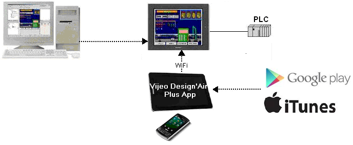

|
|
|
|
|
|
|
|
Vijeo Design'Air Plus is useful in environments in which an operator requires a mobile solution for data access and automation control. With Vijeo Design'Air Plus, you can open a Vijeo Designer application in a tablet or smartphone to display data and control automation processes, enabling an operator to:
View, monitor, and change variable values
Monitor and acknowledge alarms.
Vijeo Design'Air Plus is set up as follows:
In Vijeo Designer, the HMI designer can:
Create a tablet/smartphone project. For more information, see Section 23.1.1.1, Setting Up a Tablet/Smartphone Project.
Design panels specifically for the tablet/smartphone display size. For more information, see Section 23.1.1.2, Drawing Graphics on a Tablet/Smartphone Panel.
Download the tablet/smartphone project to the target machine. The target machine hosts the tablet/smartphone project files. If data sharing is enabled, the target machine shares its variables and alarms with the tablet/smartphone.
On the tablet/smartphone, the operator can:
Download Vijeo Design'Air Plus, the Vijeo Designer Tablet HMI App, from the application market place. You can find the App in Google Play or the App Store.
Run Vijeo Design'Air Plus and view a list of tablet/smartphone applications in the App's Main View, select an application to work with, and log in by entering a valid username and password. On login, the tablet/smartphone downloads the compressed project file from the host target machine, stores it locally, and launches the tablet/smartphone application. For more information, see Section 23.1.1.3, Working in Vijeo Design'Air Plus.
Use Vijeo Design'Air to view a tablet/smartphone application, monitor and change variable values. For more information, see Section 23.1.1.4, Working with the Vijeo Designer Application on the Tablet/Smartphone.
Receive Email or SMS messages on tablet/smartphone with a link that to open the Vijeo Design'Air Plus App and launch the alarm page. For more information see Accessing the Alarm Panel from Email or SMS message in 23.1.1.3 Working in Vijeo Deisgn'Air Plus.
The following image provides an overview of how Vijeo Design'Air Plus is set up in a typical environment.

Vijeo Design'Air Plus is available for use with target machines that support an Ethernet connection, and tablet/smartphones that support iOS6.0 or later, or Android 4.0 or later. To check whether your target machine supports Ethernet, see Appendix 5.2, Features Supported by Hardware Platforms. The number of connections that a target machine can have for data sharing is described in Appendix 4, Runtime Specifications (Communication: Number of Maximum Share Connections).

A target machine can connect to and share data with only one tablet/smartphone at a time, while a tablet/smartphone can connect to and share data with multiple target machines.
The target machine hosts the tablet/smartphone project files. The files are loaded to the mobile device when requested.
The cache manager is a storage place for downloaded tablet/smartphone applications and decompressed tablet/smartphone project files. If there is a corrupt file or a connection issue, the cache manager automatically deletes the corrupt application file. The cache manager only stores successfully downloaded tablet/smartphone application files and decompressed files.
The operator can use the Purge Cache function in the Main View to remove the local copy of the tablet/smartphone application from the cache manager. For more information, see Purge Cache in Section 23.1.1.3, Working in Vijeo Design'Air Plus.